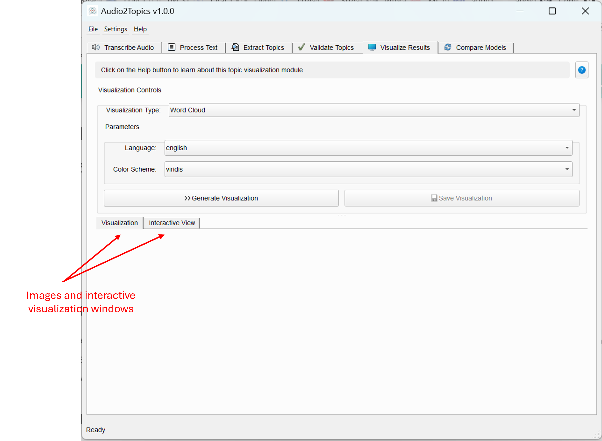
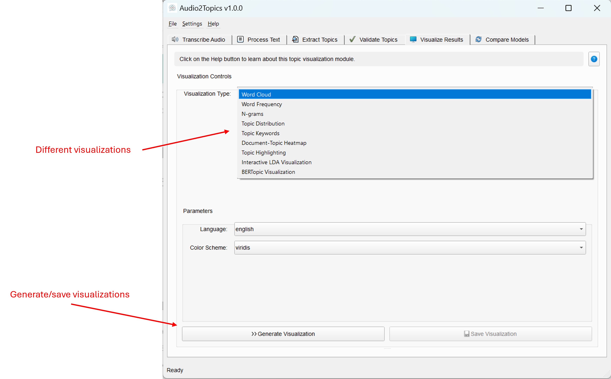

Visualization Module
Overview
The Visualization module enables you to create interactive and static visualizations of your text data and topic models. It provides a comprehensive suite of visualization tools that help you understand document content, explore word patterns, and interpret topic modeling results through visual representations.
This module allows you to: - Generate word clouds and frequency charts to visualize key terms - Analyze n-gram patterns to identify common phrases - Explore topic distributions across your document collection - Visualize topic keywords and their importance - Highlight topic patterns directly in original texts - Create interactive visualizations for deep exploration of topic models - Export visualizations for presentations and reports
Visualizations make complex text and topic data more accessible, helping to communicate insights effectively and discover patterns that might be missed in raw data.
Main interface of the Visualizer Tab
 
Core Components
Visualizer Class
The Visualizer class serves as the main interface for visualization functionality, managing the generation of visualizations using worker threads.
Methods
| Method | Description | Parameters | Returns |
|---|---|---|---|
generate_visualization() |
Starts generation of a visualization in a worker thread | viz_type: Type of visualization to generatedata: Data for the visualization**kwargs: Additional parameters |
Returns the worker thread that can be connected to signals |
highlight_topics_in_documents() |
Highlights topics in original text documents | documents: List of document stringstopic_model: Topic modeltopic_ids: List of topic IDs to highlightcolors: List of colors for each topic |
List of HTML strings with highlighted topics |
get_available_visualizations() |
Returns available visualization types | None | Dictionary mapping visualization names to their types |
save_figure() |
Saves a figure to a file | fig: Matplotlib figurefilename: Output filenamedpi: Resolution |
Boolean indicating success |
figure_to_bytes() |
Converts a figure to bytes for embedding | fig: Matplotlib figureformat: Output formatdpi: Resolution |
Bytes containing the image data |
VisualizationWorker Class
The VisualizationWorker class extends QThread to handle visualization generation in a background thread, keeping the UI responsive.
Signals
| Signal | Description | Parameters |
|---|---|---|
progress_updated |
Emitted to update progress | int: progress percentage, str: status message |
visualization_completed |
Emitted when visualization is done | object: Figure object or tuple with figure and HTML |
error_occurred |
Emitted when an error occurs | str: error message |
Visualization Types
The module provides various visualization types for different analytical purposes:
Text-Based Visualizations
Word Cloud
Generates a visual representation of word frequency where word size corresponds to frequency.
# Example code
from core.visualizer import Visualizer
visualizer = Visualizer()
worker = visualizer.generate_visualization(
viz_type='wordcloud',
data=documents,
language='english',
colormap='viridis'
)
Word Frequency
Creates a horizontal bar chart showing the most frequent words in the documents.
# Example code
worker = visualizer.generate_visualization(
viz_type='word_freq',
data=documents,
language='english',
top_n=30
)
N-grams Analysis
Visualizes the most common phrases (word sequences) in the documents.
# Example code
worker = visualizer.generate_visualization(
viz_type='ngrams',
data=documents,
n=2, # bigrams
top_n=50,
language='english'
)
Topic-Based Visualizations
Topic Distribution
Shows how documents are distributed across topics using a bar chart.
# Example code
worker = visualizer.generate_visualization(
viz_type='topic_distribution',
data=topic_counts
)
Topic Keywords
Visualizes the most important words for each topic in a grid of bar charts.
# Example code
worker = visualizer.generate_visualization(
viz_type='topic_keywords',
data=topics_words,
top_n=10,
colormap='viridis'
)
Topic Heatmap
Creates a heatmap showing document-topic assignments, where color intensity represents probability.
# Example code
worker = visualizer.generate_visualization(
viz_type='topic_heatmap',
data=doc_topic_matrix
)
Topic Highlighting
Highlights topics directly in the original text documents using colored spans.
# Example code
highlighted_docs = visualizer.highlight_topics_in_documents(
documents,
topic_model,
topic_ids=[0, 1, 2],
colors=['#ff0000', '#00ff00', '#0000ff']
)
Interactive Visualizations
pyLDAvis (LDA Visualization)
Creates an interactive visualization for LDA topic models using the pyLDAvis library.
# Example code
worker = visualizer.generate_visualization(
viz_type='pyldavis',
data={
'model': lda_model,
'dtm': document_term_matrix,
'vectorizer': vectorizer
},
mds='tsne'
)
BERTopic Visualization
Creates an interactive visualization for BERTopic models showing topic relationships.
# Example code
worker = visualizer.generate_visualization(
viz_type='bertopic_interactive',
data=bertopic_model,
topics=top_10_topics
)
User Interface
The VisualizerTab class provides a comprehensive interface for creating, viewing, and saving visualizations.
UI Components
- Visualization Controls:
- Visualization type dropdown
- Parameter configuration section (changes based on selected visualization)
-
Generate and Save buttons
-
Visualization Display:
- Tabs for static and interactive views
- Canvas with toolbar for static visualizations
-
Web view for interactive visualizations
-
Topic Highlighting Dialog:
- Topic selection with color indication
- Document navigator for exploring highlighted content
- Legend showing topic colors and keywords
Usage Guide
Creating Visualizations
- Select a visualization type from the dropdown menu
- Configure the visualization parameters (if applicable)
- Click "Generate Visualization" to create the visualization
- The visualization will appear in the main viewing area
- Interactive visualizations will appear in the "Interactive View" tab
Customizing Visualizations
Each visualization type offers specific customization options:
Word Cloud
- Language: Select the text language for better processing
- Color Scheme: Choose from various color palettes
Word Frequency
- Number of Words: Set how many top words to display
- Language: Select the text language
N-grams Analysis
- N-gram Size: Set the size of word sequences (2=bigrams, 3=trigrams)
- Number of N-grams: Set how many top phrases to display
- Language: Select the text language
Topic Keywords
- Words per Topic: Set how many words to show for each topic
- Color Scheme: Choose from various color palettes
Topic Highlighting
- Select Topics: Choose which topics to highlight
- Color Scheme: Select a color palette for topic differentiation
Interactive LDA
- MDS Algorithm: Choose between t-SNE and PCoA for dimensionality reduction
BERTopic Visualization
- Number of Topics: Set how many topics to include in the visualization
Navigating Visualizations
The interface provides several tools for exploring visualizations:
- Zoom and Pan: Use the toolbar below visualizations to zoom in/out and pan
- Reset View: Click the home button in the toolbar to reset the view
- Interactive Elements: For interactive visualizations, click on elements for details
- Smooth Scrolling: Scroll smoothly through large visualizations with optimized controls
Saving Visualizations
- Click "Save Visualization" to export your visualization
- For static visualizations (word clouds, charts, etc.):
- Choose from PNG, JPEG, PDF, or SVG formats
- Set the filename and location
- For interactive visualizations (pyLDAvis, BERTopic):
- Save as HTML for interactive viewing in any web browser
- The HTML file contains the complete interactive visualization
Visualization Selection Guide
| Visualization Type | Best Used For | Requirements |
|---|---|---|
| Word Cloud | Quick overview of key terms, presentations | Text documents |
| Word Frequency | Precise word frequency analysis | Text documents |
| N-grams | Identifying common phrases and expressions | Text documents |
| Topic Distribution | Understanding topic prevalence | Topic model results |
| Topic Keywords | Interpreting topic meaning | Topic model results |
| Topic Heatmap | Analyzing document-topic relationships | Topic model results |
| Topic Highlighting | Validating topics in original context | Topic model and documents |
| Interactive LDA | Deep exploration of LDA topic models | LDA topic model |
| BERTopic Visualization | Interactive exploration of BERTopic models | BERTopic model |
Tips for Effective Visualization
General Visualization Tips
- Choose the right visualization for your specific analytical goal
- Use consistent color schemes across related visualizations
- Balance detail and clarity - sometimes less information is more effective
- Consider your audience - simpler visualizations for non-technical viewers
- Combine multiple visualization types for comprehensive understanding
Word-Based Visualizations
- Remove common stopwords before visualization for clearer results
- For technical content, preserve domain-specific terms
- Compare n-grams with single words to capture multi-word concepts
- Consider stemming or lemmatization for more concise visualizations
Topic-Based Visualizations
- Exclude outlier topics (-1) for cleaner visualizations
- Use topic highlighting to validate model quality in original text
- Compare topic distribution with topic coherence metrics
- Use LLM-refined topic labels for more interpretable visualizations
For Presentations
- Word clouds and simple bar charts are most accessible to general audiences
- Use consistent color coding across visualizations for topics
- Include examples of highlighted text to show topics in context
- Save as high-resolution images (300 DPI or higher) for print materials
Technical Notes
Smooth Scrolling and Performance
The interface includes optimizations for smooth performance:
- Pixel-based scrolling for smoother navigation
- Reduced scroll sensitivity for finer control
- Optimized rendering for large visualizations
- Hardware acceleration when available
Model Compatibility
- pyLDAvis works best with LDA models but can display warnings with others
- BERTopic visualizations require a BERTopic model with embedding data
- Topic highlighting works with all model types but with varying accuracy
File Formats
When saving visualizations, different formats offer different advantages:
- PNG: Good general-purpose format, suitable for presentations
- JPEG: Smaller file size but lower quality for text
- PDF: Vector format, excellent for publication
- SVG: Vector format, good for further editing
- HTML: Required for interactive visualizations